This read-only review uses the completed development-only scVI representation. UMAP coordinates and marker plots use the deterministic 250,000-cell diagnostic sample; cluster cell and anchor counts use all 4,023,462 cells. No locked cohort was included.
The missing historical integrated H5AD prevents recovery of its complete full-cell scANVI annotation column. The plot therefore shows only traceable evidence: prior scANVI-NK cells retained in the frozen V4 manifest, dual scANVI-plus-author NK anchors, restored productive-TRA/TRB T anchors, and the 469 current two-evidence NK candidates.
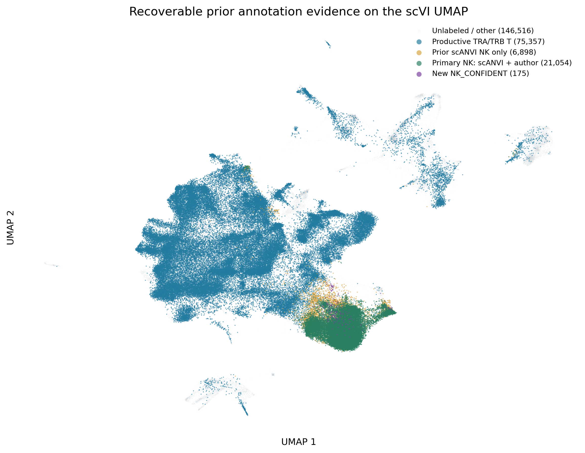
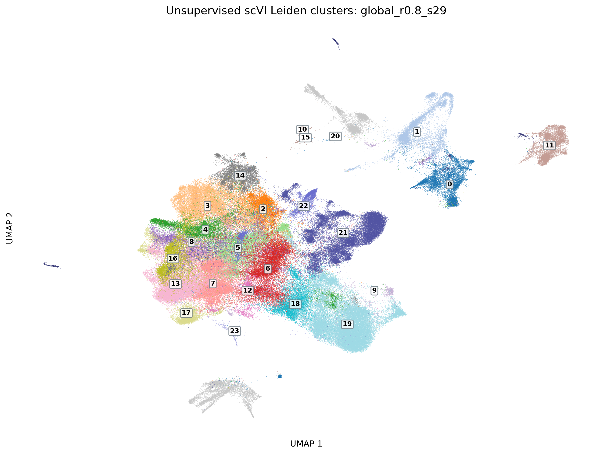
global_r0.8_s29.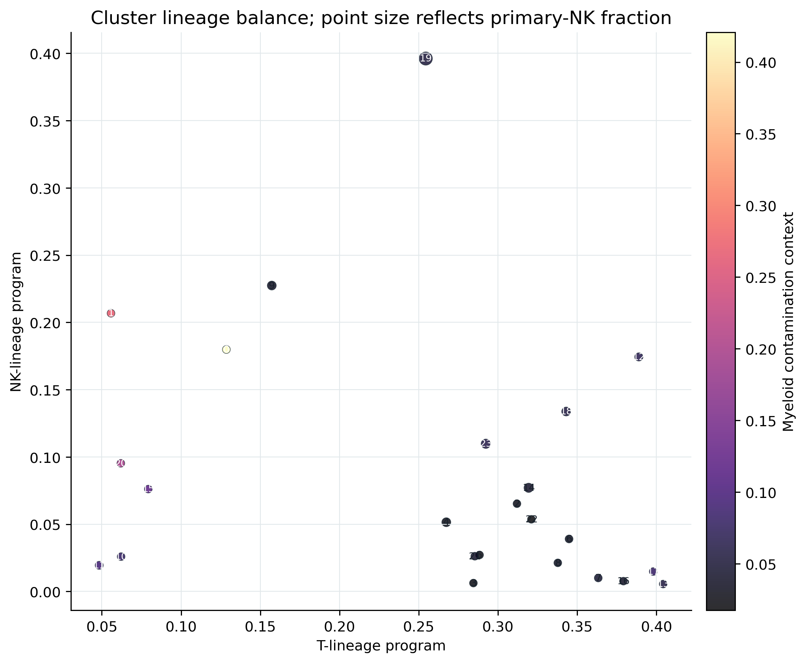
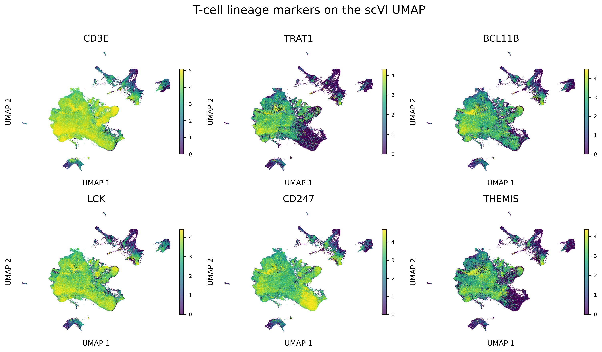
log1p(raw UMI) from the six registered source H5ADs on the unchanged scVI UMAP. Exact counts use all 4,023,462 cells, not only the visualization sample, and all 6 source H5ADs contain all 29 displayed genes.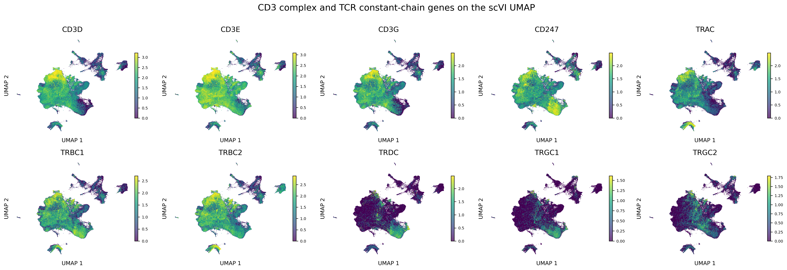
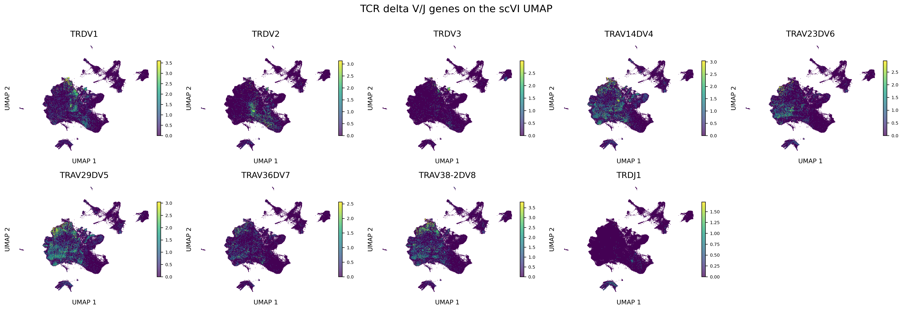
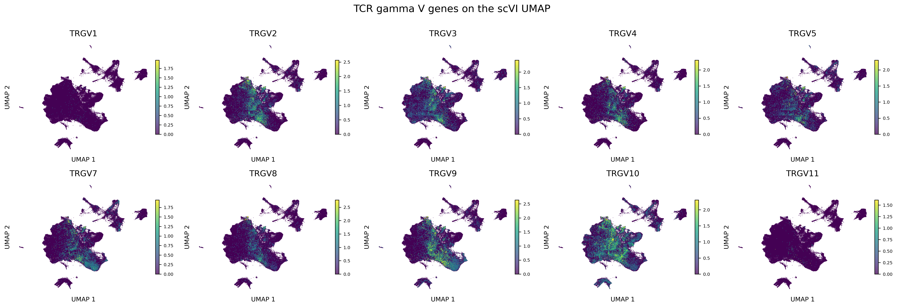
Across the full sidecar, 3,435,095 cells express at least one of CD3D/E/G, 290,288 express TRDC, and 652,723 express at least one selected delta-V gene. There are 222,616 TRDC-positive cells without detected delta-V expression, consistent with either dropout or non-specific/ambient constant-chain signal depending on the surrounding lineage evidence.
| Population | Cells | CD3D/E/G+ n | CD3D/E/G+ % | TRA/B constant+ n | TRA/B constant+ % | TRDC+ n | TRDC+ % | Delta-V+ n | Delta-V+ % | TRDC+ Delta-V- n | TRDC+ Delta-V- % | Gamma-V+ n | Gamma-V+ % |
|---|---|---|---|---|---|---|---|---|---|---|---|---|---|
| All development sidecar | 4,023,462 | 3,435,095 | 85.38% | 3,058,977 | 76.03% | 290,288 | 7.21% | 652,723 | 16.22% | 222,616 | 5.53% | 1,086,515 | 27.00% |
| Primary NK anchors | 21,054 | 8,242 | 39.15% | 17,105 | 81.24% | 8,487 | 40.31% | 396 | 1.88% | 8,277 | 39.31% | 4,642 | 22.05% |
| Productive TRA/TRB T anchors | 967,149 | 957,169 | 98.97% | 819,957 | 84.78% | 16,946 | 1.75% | 186,121 | 19.24% | 11,093 | 1.15% | 244,243 | 25.25% |
| All eligible candidates | 113,287 | 78,528 | 69.32% | 58,112 | 51.30% | 6,161 | 5.44% | 11,668 | 10.30% | 3,789 | 3.34% | 23,040 | 20.34% |
| Cluster 19 all cells | 490,300 | 295,409 | 60.25% | 418,329 | 85.32% | 181,765 | 37.07% | 51,030 | 10.41% | 161,663 | 32.97% | 197,372 | 40.26% |
| Cluster 19 eligible candidates | 9,162 | 4,353 | 47.51% | 6,678 | 72.89% | 1,952 | 21.31% | 451 | 4.92% | 1,784 | 19.47% | 3,473 | 37.91% |
| Strict NK core (cluster 19 both evidence) | 461 | 0 | 0.00% | 350 | 75.92% | 152 | 32.97% | 2 | 0.43% | 152 | 32.97% | 195 | 42.30% |
| Current confident outside cluster 19 | 8 | 0 | 0.00% | 3 | 37.50% | 0 | 0.00% | 0 | 0.00% | 0 | 0.00% | 3 | 37.50% |
| Cluster 9 all cells | 41,060 | 16,894 | 41.14% | 29,634 | 72.17% | 17,834 | 43.43% | 1,312 | 3.20% | 17,200 | 41.89% | 12,532 | 30.52% |
| Cluster 9 eligible candidates | 1,139 | 485 | 42.58% | 630 | 55.31% | 303 | 26.60% | 29 | 2.55% | 292 | 25.64% | 306 | 26.87% |
| Gene | Panel | Detected cells | Detected % |
|---|---|---|---|
| CD3D | CD3_complex | 2,662,995 | 66.19% |
| CD3E | CD3_complex | 3,170,723 | 78.81% |
| CD3G | CD3_complex | 2,112,641 | 52.51% |
| CD247 | CD3_complex | 2,271,048 | 56.45% |
| TRAC | TCR_constant | 1,193,424 | 29.66% |
| TRBC1 | TCR_constant | 1,524,836 | 37.90% |
| TRBC2 | TCR_constant | 2,320,383 | 57.67% |
| TRDC | TCR_constant | 290,288 | 7.21% |
| TRGC1 | TCR_constant | 187,532 | 4.66% |
| TRGC2 | TCR_constant | 271,270 | 6.74% |
| TRDV1 | TCR_delta_VJ | 90,907 | 2.26% |
| TRDV2 | TCR_delta_VJ | 59,417 | 1.48% |
| TRDV3 | TCR_delta_VJ | 24,261 | 0.60% |
| TRAV14DV4 | TCR_delta_VJ | 130,749 | 3.25% |
| TRAV23DV6 | TCR_delta_VJ | 73,328 | 1.82% |
| TRAV29DV5 | TCR_delta_VJ | 163,183 | 4.06% |
| TRAV36DV7 | TCR_delta_VJ | 56,332 | 1.40% |
| TRAV38-2DV8 | TCR_delta_VJ | 101,094 | 2.51% |
| TRDJ1 | TCR_delta_VJ | 5,234 | 0.13% |
| TRGV1 | TCR_gamma_V | 2,862 | 0.07% |
| TRGV2 | TCR_gamma_V | 194,343 | 4.83% |
| TRGV3 | TCR_gamma_V | 205,955 | 5.12% |
| TRGV4 | TCR_gamma_V | 127,277 | 3.16% |
| TRGV5 | TCR_gamma_V | 130,784 | 3.25% |
| TRGV7 | TCR_gamma_V | 137,135 | 3.41% |
| TRGV8 | TCR_gamma_V | 102,396 | 2.54% |
| TRGV9 | TCR_gamma_V | 227,775 | 5.66% |
| TRGV10 | TCR_gamma_V | 292,149 | 7.26% |
| TRGV11 | TCR_gamma_V | 4,074 | 0.10% |
| Gene group | Minimum total UMI | Cells | Fraction of 461 | Median UMI among positive | P90 UMI among positive |
|---|---|---|---|---|---|
| CD3D_E_G | 1 | 0 | 0.00% | 0.0 | 0.0 |
| CD3D_E_G | 2 | 0 | 0.00% | 0.0 | 0.0 |
| CD3D_E_G | 3 | 0 | 0.00% | 0.0 | 0.0 |
| CD3D_E_G | 5 | 0 | 0.00% | 0.0 | 0.0 |
| alpha_beta_constant | 1 | 350 | 75.92% | 3.0 | 7.0 |
| alpha_beta_constant | 2 | 250 | 54.23% | 3.0 | 7.0 |
| alpha_beta_constant | 3 | 178 | 38.61% | 3.0 | 7.0 |
| alpha_beta_constant | 5 | 80 | 17.35% | 3.0 | 7.0 |
| gamma_delta_constant | 1 | 186 | 40.35% | 2.0 | 4.0 |
| gamma_delta_constant | 2 | 95 | 20.61% | 2.0 | 4.0 |
| gamma_delta_constant | 3 | 43 | 9.33% | 2.0 | 4.0 |
| gamma_delta_constant | 5 | 15 | 3.25% | 2.0 | 4.0 |
| delta_V | 1 | 2 | 0.43% | 1.0 | 1.0 |
| delta_V | 2 | 0 | 0.00% | 1.0 | 1.0 |
| delta_V | 3 | 0 | 0.00% | 1.0 | 1.0 |
| delta_V | 5 | 0 | 0.00% | 1.0 | 1.0 |
| gamma_V | 1 | 195 | 42.30% | 1.0 | 2.0 |
| gamma_V | 2 | 56 | 12.15% | 1.0 | 2.0 |
| gamma_V | 3 | 14 | 3.04% | 1.0 | 2.0 |
| gamma_V | 5 | 1 | 0.22% | 1.0 | 2.0 |
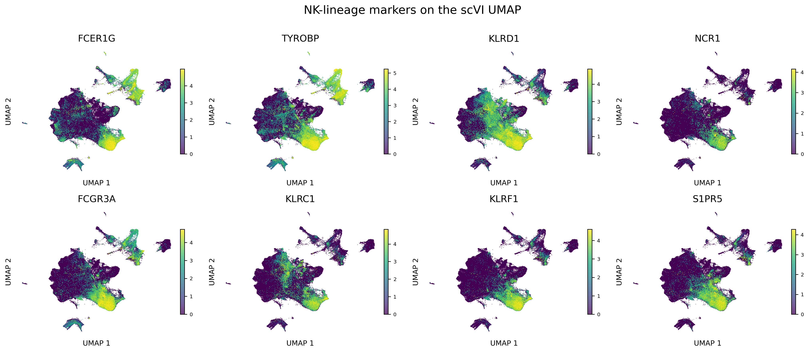
FCER1G and TYROBP are not sufficient for NK identity because myeloid cells also express them. The following panel is used only to recognize obvious non-T/NK clusters; these genes are not proposed as gdTAI classifier features.
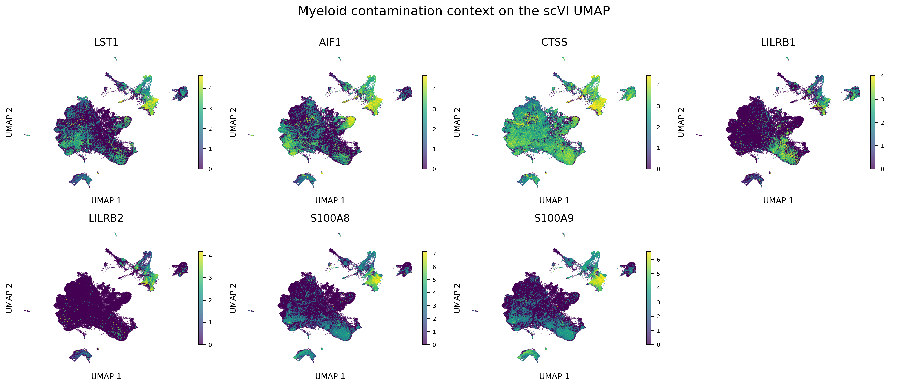
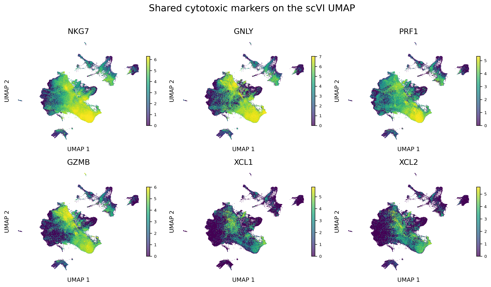
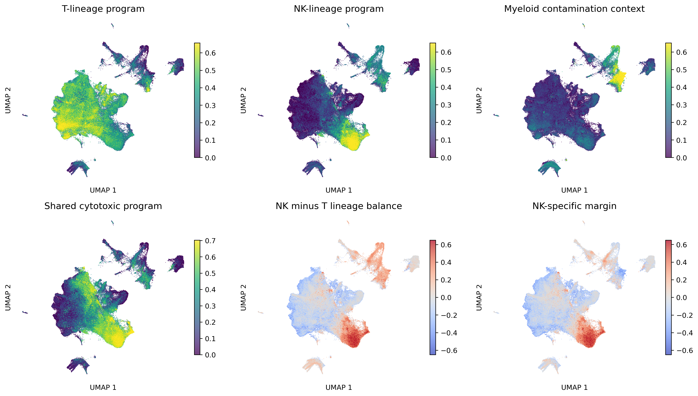
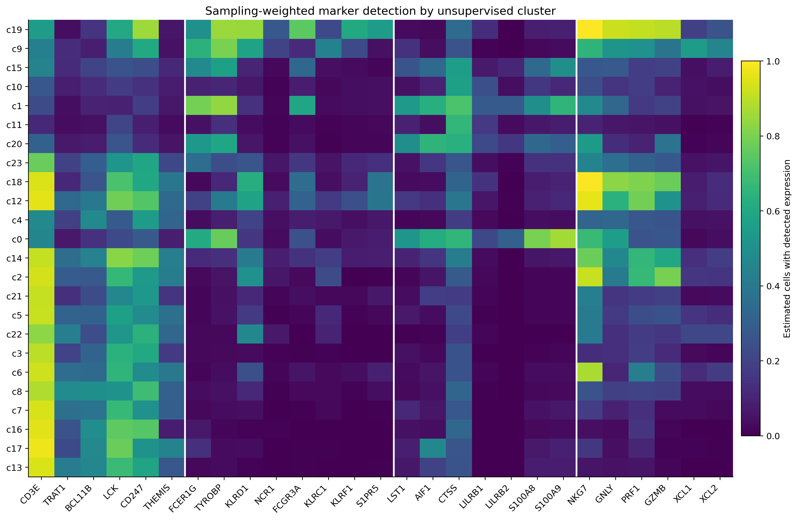
The table ranks clusters by the continuous NK-specific margin: NK lineage minus the stronger of T-lineage or myeloid-context evidence. It does not impose a new hard NK cutoff. Exact anchor, candidate, and source-composition counts are included so expression, annotation provenance, and source bias can be considered together.
| cluster | nk_likeness_rank | n_cells | n_primary_nk | n_productive_t | n_eligible_candidates | n_confident_nk | weighted_t_program | weighted_nk_program | weighted_myeloid_program | weighted_cytotoxic_program | nk_minus_t_program | nk_specific_margin | dominant_candidate_source | dominant_candidate_source_fraction |
|---|---|---|---|---|---|---|---|---|---|---|---|---|---|---|
| 19 | 1 | 490300 | 20237 | 18316 | 9162 | 461 | 0.254 | 0.396 | 0.054 | 0.522 | 0.142 | 0.142 | GSE292700 | 86.7% |
| 9 | 2 | 41060 | 48 | 686 | 1139 | 1 | 0.157 | 0.227 | 0.037 | 0.309 | 0.070 | 0.070 | GSE294273 | 49.3% |
| 15 | 3 | 39722 | 0 | 2829 | 14043 | 0 | 0.079 | 0.076 | 0.119 | 0.050 | -0.003 | -0.043 | GSE292700 | 80.2% |
| 10 | 4 | 9276 | 0 | 907 | 181 | 0 | 0.062 | 0.026 | 0.079 | 0.054 | -0.036 | -0.053 | GSE292700 | 66.9% |
| 1 | 5 | 42063 | 0 | 1554 | 16940 | 0 | 0.056 | 0.207 | 0.269 | 0.086 | 0.151 | -0.062 | GSE292700 | 96.9% |
| 11 | 6 | 112032 | 8 | 5570 | 5772 | 0 | 0.048 | 0.019 | 0.093 | 0.025 | -0.029 | -0.073 | GSE294273 | 85.8% |
| 20 | 7 | 7922 | 0 | 515 | 488 | 0 | 0.062 | 0.095 | 0.196 | 0.091 | 0.033 | -0.100 | GSE294273 | 88.3% |
| 23 | 8 | 11226 | 26 | 4894 | 39 | 0 | 0.292 | 0.110 | 0.062 | 0.168 | -0.183 | -0.183 | GSE292700 | 97.4% |
| 18 | 9 | 236832 | 262 | 80173 | 668 | 0 | 0.343 | 0.134 | 0.056 | 0.425 | -0.209 | -0.209 | GSE292700 | 40.1% |
| 12 | 10 | 73248 | 12 | 25437 | 388 | 0 | 0.389 | 0.174 | 0.067 | 0.334 | -0.215 | -0.215 | GSE292700 | 45.1% |
No automatic expansion is recommended. The next defensible step is a source- and library-resolved audit of TCR UMI depth, ambient burden, doublet scores, and paired TCR evidence within cluster 19. Cluster-19 single-evidence tiers and cluster 9 remain review-only.
| review_tier | n_cells | n_sources | dominant_source | maximum_source_fraction | recommended_use |
|---|---|---|---|---|---|
| A_core_both_cluster19 | 461 | 4 | GSE292700 | 96.7% | provisional core; source/ambient review |
| B_cluster19_latent_only_dropout_review | 594 | 5 | GSE292700 | 91.1% | dropout-rescue review only |
| C_cluster19_expression_only_distance_review | 759 | 3 | GSE292700 | 91.7% | source/distance review only |
| D_cluster9_secondary_nk_review | 257 | 3 | GSE294273 | 57.6% | secondary-cluster review only |
| E_current_confident_outside_core_hold | 7 | 1 | GSE292700 | 100.0% | hold out of strict NK training |
| F_no_nk_assignment | 111209 | 5 | GSE292700 | 46.7% | do not assign NK |
No H5AD or frozen label manifest is changed by this report. A defensible expansion should require coherent NK-lineage expression, low T-lineage and myeloid support, localization to reproducible unsupervised clusters, and acceptable source composition. Cytotoxicity alone, one receptor, or the historical scANVI label alone is insufficient.
7030b28be885b85a4b24ce2223bb16f7c7288a29195f2512bf7bbba330791ccf90e83ec83986358a015885e02e29d06eacf726d928e02b2e90428d5c09947a63global_r0.8_s2982ad58d59e336be57a25cabaa48f56e414f674acdb2657103003ff64c271422580fadd095a1ed13600ef8fba164b779522a98440de8d28c11b90a7828d43cee54e9cbab26923f63d22f3147ce153bb1582acd046fc785581a82239d15bbaa944